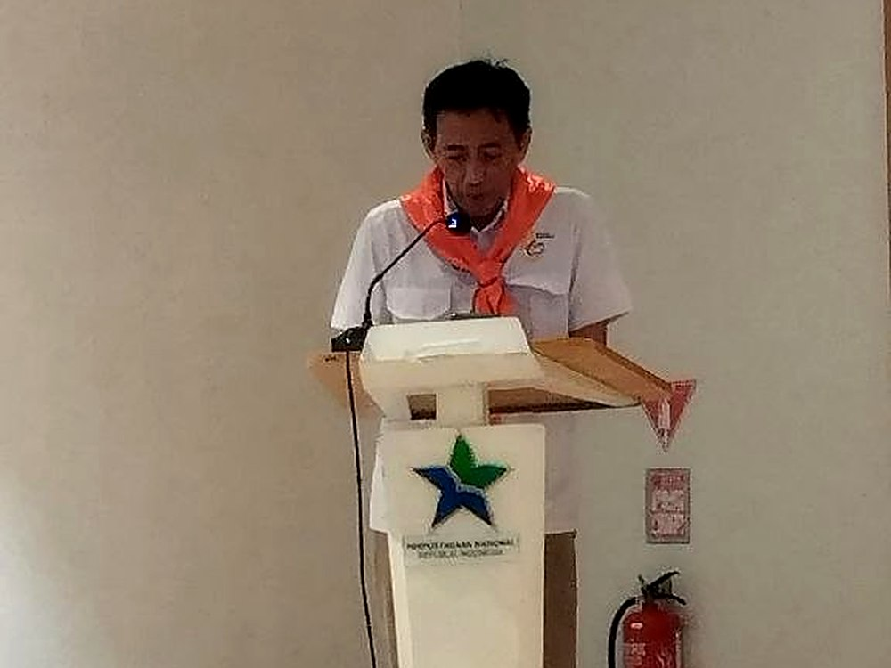

Perjalanan empat dekade sebuah unit kegiatan mahasiswa menjadi pintu masuk pembahasan kebencanaan nasional di Jakarta. Seminar “Antisipasi Kebencanaan Aktual dan Partisipasi Publik dan Komunitas” digelar di Ruang Serba Guna lantai 4 Gedung Perpustakaan Nasional, Jakarta Pusat, Senin (21/9/2026), berbarengan dengan peluncuran buku “Rumah Jingga Tamalanrea: Cikal Bakal SAR Mahasiswa, 40 Tahun SAR Unhas”.
Four decades of a student activity unit became the entry point for a national disaster discussion in Jakarta. The seminar “Current Disaster Anticipation and Public and Community Participation” was held at the Multipurpose Room on the fourth floor of the National Library of Indonesia building in Central Jakarta on Monday (21/9/2026), alongside the launch of the book “Rumah Jingga Tamalanrea: Cikal Bakal SAR Mahasiswa, 40 Tahun SAR Unhas”.
Search and Rescue Universitas Hasanuddin berdiri pada 14 Juni 1986 dan kini menaungi lebih dari 500 orang. Buku yang diluncurkan menyusun jejak organisasi itu, dari masa perintisan di Tamalanrea sampai perannya dalam operasi kemanusiaan di sejumlah daerah.
Search and Rescue Universitas Hasanuddin was founded on 14 June 1986 and now counts more than 500 members. The book traces the organisation’s path, from its early years in Tamalanrea to its role in humanitarian operations in a number of regions.
Pembukaan diisi sambutan Kepala Perpustakaan Nasional, Prof. E. Aminudin Aziz, dan Direktur Kampus Unhas Jakarta, Dr. Ir. Syarif Burhanuddin. Keynote speech disampaikan Deputi Bidang Bina Tenaga dan Potensi Basarnas, Moh. Barokna Haulah, mewakili Sekretaris Utama Basarnas. Sambutan Ikatan Alumni Unhas disampaikan Sekretaris Jenderal PP IKA Unhas, Prof. Dr. Ir. Yusran Jusuf, M.Si, IPU.
The opening featured remarks by the Head of the National Library, Prof. E. Aminudin Aziz, and the Director of the Unhas Jakarta Campus, Dr. Ir. Syarif Burhanuddin. The keynote speech was delivered by the Deputy for Human Resources and Potential of the National Search and Rescue Agency (Basarnas), Moh. Barokna Haulah, representing the Agency’s Secretary General. The alumni association address was given by the Secretary General of the IKA Unhas Central Board, Prof. Dr. Ir. Yusran Jusuf, M.Si, IPU.
Sesi pertama membahas literasi kebencanaan aktual. Ahli Badan Nasional Penanggulangan Bencana memaparkan efektivitas sistem peringatan dini dan tantangan kebencanaan di Indonesia. Kepala Badan Meteorologi, Klimatologi, dan Geofisika, Prof. Teuku Faisal Fathani, membahas ancaman bencana hidrometeorologi dan cuaca ekstrem, termasuk pelajaran dari banjir bandang di Nepal. Peneliti Utama Badan Riset dan Inovasi Nasional, Dr. Agustan, mengangkat cara membaca gempa berskala besar yang terjadi beruntun di beberapa negara belakangan ini.
The first session covered current disaster literacy. An expert from the National Disaster Management Agency presented on the effectiveness of early warning systems and the challenges of disasters in Indonesia. The Head of the Meteorology, Climatology and Geophysics Agency, Prof. Teuku Faisal Fathani, discussed hydrometeorological hazards and extreme weather, including lessons from the flash flood in Nepal. Principal Researcher at the National Research and Innovation Agency, Dr. Agustan, addressed how to read the large earthquakes that have struck several countries in succession recently.

Sesi kedua bergerak ke peran publik. Direktur Bina Potensi Basarnas, Agus Haryono, membahas integrasi relawan dalam manajemen operasi SAR. Badan Pengurus Mapala UI, Azis Indrawan, memaparkan tanggung jawab sosial mahasiswa dengan kerangka 5W dan 1H, mulai dari sinergi dengan Tri Dharma Perguruan Tinggi, pihak yang dilibatkan, alasan keterlibatan mahasiswa, waktu kejadian, lokasi kerja, sampai cara kerja yang terintegrasi di bawah garis komando dan bermitra dengan berbagai pihak.
The second session shifted to the public role. The Director of Potential Development at Basarnas, Agus Haryono, discussed the integration of volunteers in SAR operation management. The Mapala UI board member, Azis Indrawan, presented student social responsibility through a 5W and 1H framework, from synergy with the university’s threefold mission, the parties involved, the reasons for student engagement, the timing of events, the working locations, to a mode of work that is integrated under a single command line and partners with multiple parties.
Dewan Pengurus Wanadri, Zulfahmi Ramli, mengusulkan inisiasi standar kompetensi publik pemuda dalam menghadapi bencana melalui tiga tahap. Tahap pra-bencana memuat edukasi kebencanaan di tingkat komunitas, identifikasi bahaya dan risiko lokal, serta geladi dan simulasi evakuasi mandiri. Tahap tanggap darurat memuat Pertolongan Pertama Gawat Darurat, Urban Search and Rescue, water rescue, kajian cepat dampak bencana, air sanitasi dan kebersihan, serta manajemen dapur umum dan distribusi logistik. Tahap pasca bencana memuat pertolongan pertama psikologis.
The Wanadri board member, Zulfahmi Ramli, proposed initiating a public competency standard for young people in facing disasters through three stages. The pre-disaster stage covers community-level disaster education, identification of local hazards and risks, and drills and independent evacuation simulations. The emergency response stage covers Basic Emergency First Aid, Urban Search and Rescue, water rescue, rapid disaster impact assessment, water sanitation and hygiene, and management of public kitchens and logistics distribution. The post-disaster stage covers psychological first aid.
Sesi ditutup oleh Rahmat Lewa dari PT Masmindo Dwi Area, anak usaha Indika Energy Group yang mengelola proyek tambang emas Awak Mas di Kabupaten Luwu, Sulawesi Selatan. Perusahaan menyampaikan materi bertajuk “Partisipasi Masyarakat Usaha dalam Gagasan Desa Tahan Bencana”, yang menempatkan dunia usaha sebagai pihak yang ikut menyiapkan kesiapsiagaan di tingkat desa, bukan hanya sebagai pemilik proyek di kawasan rawan bencana.
The session closed with Rahmat Lewa of PT Masmindo Dwi Area, a subsidiary of the Indika Energy Group that runs the Awak Mas gold mining project in Luwu Regency, South Sulawesi. The company presented material titled “Business Community Participation in the Idea of a Disaster-Resilient Village”, positioning businesses as parties that help prepare village-level preparedness, not merely as project owners in hazard-prone areas.
Dari sisi data, Perpustakaan Nasional memaparkan Peta Sumber Gempa 2024 dari Pusat Studi Gempa Nasional yang memetakan 401 sesar atau segmen sesar aktif, dengan rincian Sumatra 86, Jawa 82, Sulawesi 77, Bali dan Banda 68, Papua 62, Maluku 16, dan Kalimantan 10. Laju pergerakan sebagian sumber disebut mencapai sekitar 70 milimeter per tahun. Perpusnas juga mencatat sekitar 1.600 koleksi tentang kebencanaan, 3.234 judul buku bertema bencana yang terbit melalui layanan ISBN sampai Agustus 2026, serta keterlibatannya dalam penyelamatan koleksi pasca bencana di Garut 2016, Jeneponto 2019, dan Aceh 2026.
On the data side, the National Library presented the 2024 Earthquake Source Map from the National Earthquake Study Centre, which maps 401 active faults or fault segments: 86 in Sumatra, 82 in Java, 77 in Sulawesi, 68 in Bali and Banda, 62 in Papua, 16 in Maluku, and 10 in Kalimantan. The slip rate of some sources is put at around 70 millimetres per year. The National Library also records about 1,600 collections on disasters, 3,234 disaster-themed book titles published through its ISBN service up to August 2026, and its involvement in rescuing collections after disasters in Garut in 2016, Jeneponto in 2019, and Aceh in 2026.
Bagi komunitas gunung, dua hal dari acara ini bersinggungan langsung. Pertama, Pertolongan Pertama Gawat Darurat, Urban Search and Rescue, dan water rescue yang masuk usulan standar kompetensi adalah keterampilan yang dipakai di jalur pendakian, bukan hanya di lokasi bencana. Kedua, peta 401 sesar aktif memberi konteks pada perencanaan rute dan mitigasi di kawasan rawan gempa. Kompetensi relawan, dengan begitu, tidak berhenti pada niat baik, melainkan pada latihan yang berulang dan terukur.
For the mountaineering community, two elements of the event are directly relevant. First, the Basic Emergency First Aid, Urban Search and Rescue, and water rescue skills included in the proposed competency standard are used on climbing routes, not only at disaster sites. Second, the map of 401 active fault segments gives context to route planning and mitigation in earthquake-prone areas. Volunteer competence, in that sense, does not rest on good intentions alone, but on repeated and measurable training.